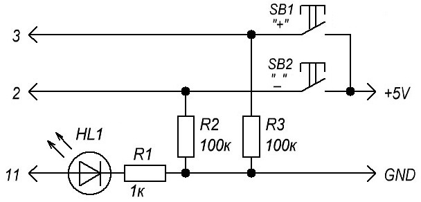
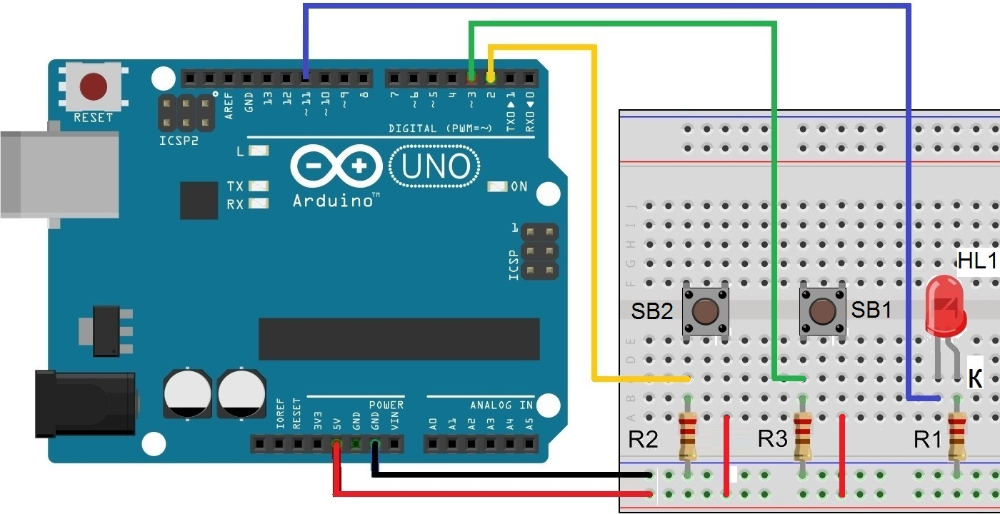

Регулировка яркости светодиода двумя кнопками
Рассмотрим управление яркостью светодиода с помощью ШИМ (широтно-импульсная модуляция) каналов (рис. 1). В Arduino UNO ШИМ можно реализовать на цифровых выводах, обозначенных "PWM" или "~". На плате Arduino Uno это D03, D05, D06, D10, D11. Скважность импульса задается в пределах от 0 до 255.

Таблица 1
| Обозначение | Наименование | Номинал | Количество | Примечание |
|---|---|---|---|---|
| HL1 | Светодиод | 1 | ||
| R1 | Резистор постоянный | 1 кОм | 1 | |
| R2, R3 | Резистор постоянный | 100 кОм | 2 | |
| SB1, SB2 | Кнопочный выключатель | 2 | без фиксации |
{kind=link}

Интенсивность свечения будет регулироваться от 0 до 254 единиц, где 0 - светодиод выключен, а 254 - горит максимально (Например при 127 яркость будет на 50%).
Светодиод подключаются через резистор сопротивлением 200 Ом ... 1 кОм (подбирается в зависимости от рабочего напряжения и тока светодиода).
Управление яркостью реализуется с помощью двух кнопок без фиксации. Кнопки подключаются через резисторы сопротивлением 10-100 кОм.
Скетч
int led = 11; // Номер вывода к которому подключен светодиод int b =0;// Переменная в которой хранится уровень яркости (От 0 до 254) int s = 5;// шаг изменения яркости int bPlus=3; // Номер вывода к которому подключена кнопка "+" int bMinus=2;// Номер вывода к которому подключена кнопка "-" void setup() { pinMode(led, OUTPUT); // Порт 11 (led) будет работать как Выход. } void loop() { //Цикл будет выполняться бесконечное количество раз if (digitalRead(bPlus) == HIGH) {//если нажата кнопка "+" b += s; // Увеличиваем значение переменной яркости на s единиц } if (digitalRead(bMinus) == HIGH) {//если нажата кнопка "-" b -= s;//Уменьшаем значение переменной яркости на s единиц } b = constrain(b, 0, 254); analogWrite(led, b); // Устанавливаем яркость светодиода delay(50); // Пауза 50 миллисекунд. }
Функция constrain(b, 0, 254) контролирует, чтобы переменная b не стала больше 254 и меньше 0. Если значение выходит за границу то функция возвращает 0 или 254.
Источники
lesson.iarduino.ru - Урок №1. Регулируем двумя кнопками яркость светодиода
publicatorbar.ru - Регулировка яркости светодиода ШИМ двумя кнопками